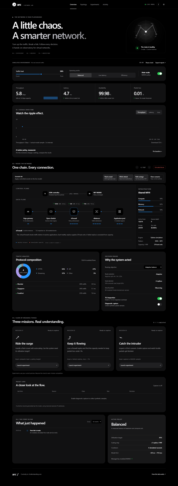

↗ arc /
YOUR NETWORK OBSERVATORY
A little chaos.
A smarter network.
The interactive lab runs on Python + Flask. Start the local service from this project folder, then open your observatory.
python -m pip install -r requirements.txtpython app.py